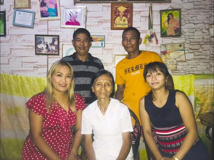
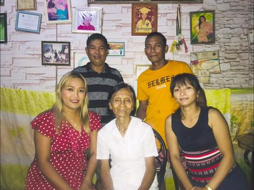

Whoever pursues righteousness and love
finds life, prosperity and honor
.
-Proverbs 21:21
Whoever pursues righteousness and love finds life, prosperity and honor.
-Proverbs 21:21
Personal Information.
Hello Everyone! My name is Aldwin Chester "Lopez" Guzman. My family usually call me Chetchet and my friends call me "Aldwin", "AC", and "dwin". I am 19 years Old turning 20 this November 04, 2002. I am from Balzain West, Tuguegarao City Cagayan. I am a First Year College student currently taking Bachelor of Science in Computer Science in CAGAYAN STATE UNIVERSITY-CARIG CAMPUS. I am also a Board Member in our school.
I am 10 years old when I started to serve in the church as a choir, 15 years old when I became a lector(who reads the word of the Lord) and 17 years old up to now as a Sacristan. As a server of the church, it developed my spiritual life, everytime I have a problem I always pray, and I advice it for everyone. I also love playing mobile and computer games. I have many plans in the future, first is to graduate and return the favor to my parents, second is to treat myself for a successful life, third is to help people who are in need. I am also a Bass Guitarist in our band named "Alumnas Band" that is why I love playing guitar and composing songs. I already composed two songs- "Maibabalik Paba?" and "Alaala". About my physical look, I am 172 cm in height and 45 kg in weight. It is sad to say that I'm underweight. When it is my free time, I do work out because I planned to be physically fit and healthy though its hard.

Educational and Leadership Background
I studied kindergarten at Marobbob DayCare Center, Amulung Cagayan.
I graduated Elementary in Tuguegarao North Central School Tuguegarao City, Cagayan as a Top 7 Student.
I am also a Consistent Awardee
I also graduated Highschool(K-12) in Cagayan National HighSchool in Tuguegarao City Cagayan.
Academic Achievements
Leadership Background


Life Experiences.
I have a broken family so I experience to grow without a father. I experienced poeverty, all the hardship in life. I experienced to act as a brother and father to my sister.
When I am still in Elementary, I experienced to go in school without any money. My grandmother would just bring food for me. It is Grade Four when I experienced serving as a choir, it is when I experienced that I am close to God. It is where I felt safe. I became active in serving the church. I felt like I'm always safe. I remember the day that I would make assignments for my classmates with money in return so that I can buy food during recess. As a student and a child, I experienced also to be alone, without anyone, I experienced depression in my childhood. I feel like there's no one for me. But after the hardships in my Elementary life, I graduated.
The same happened in my highschool life. It is when I experienced everything. I experienced pain, as a student, a child and a leader. It is when my leadership started and where my seld-confidence boosted. Because as a student leader, you should have a voice, a voice that can be use to help students. I also experienced breakdowns- like what if I can't survive this Highschool Life. I graduated Highschool and entered Senior Highschool where I started to plan my future-Web developer or Software Engineer. I experienced in this stage to developed my mental health and leadership skills. I am now a College Student and still struggling my future.

Life Reflections
Based on my Life Experiences, Here are my Reflections:
Family Background
Christopher C. Guzman
Father
Occupation: Cellphone Technician
Maricol L. Guzman
Designer
Occupation: Online Seller
Aliza Chiara L. Guzman
Sister/p>
Grade 11 Student
Aldwin Chester L. Guzman
Me
College Student taking Bachelor of Science in Computer Science
Some of my Family Picture
 

Contact Me.
Do you want to know about me? Fill out the form and fill me in with the details :) I love meeting new people!